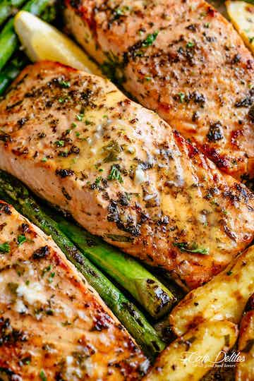

Salmon recipe

Description
THE salmon recipe of your dreams! A complete meal on one pan full of flavour. Garlic Butter Baked Salmon is easy to make using minimal ingredients you already have in your kitchen! PLUS the bonus of having only one pan to wash and no mess in your kitchen to clean up when your done.
Ingredients
- 1 pound (500 g) fingerling potatoes, halved (or Yukon golds or halved white/red baby potatoes)
- 2 tablespoons olive oil
- 1 1/2 teaspoons salt, divided
- 1/2 teaspoon cracked black pepper, divided
- 4 (6 oz | 170 g) skinless salmon fillets
- 2 1/2 tablespoons minced garlic, divided
- 2 tablespoons fresh chopped parsley
- 1/3 cup freshly squeezed lemon juice
- 1/2 cup melted unsalted butter
- 3 bunches asparagus, (18 spears, woody ends removed)
- 2 tablespoons dry white wine (substitute with 1/4 cup low-sodium chicken broth)
- 1 lemon sliced to garnish
Steps
- Heat oven to 400°F | 200°C. On a large rimmed baking sheet, toss together potatoes with the oil, 1/2 tablespoon of garlic, 1/2 teaspoon salt, and 1/4 teaspoon pepper. Spread out in an even layer and roast for 15 minutes until they're just starting to soften and brown.
- Push potatoes to one side of the sheet pan and arrange salmon down the centre. Rub salmon evenly with 1 1/2 tablespoons of the minced garlic and 2 tablespoons of parsley. Add the asparagus to the other side of the pan.
- Combine 1/4 cup of lemon juice and 1/4 cup of the melted butter together and pour the mixture over the salmon and asparagus. Season everything with the remaining salt and pepper.
- Return to oven and continue baking until the potatoes are golden and fork-tender and the salmon is opaque throughout, (about 10 minutes). Optional: broil in the last 2 minutes for charred edges.
- Meanwhile, in a small bowl, combine the remaining butter, garlic and lemon juice with the wine (or chicken stock). Serve with the salmon, veggies and lemon slices!